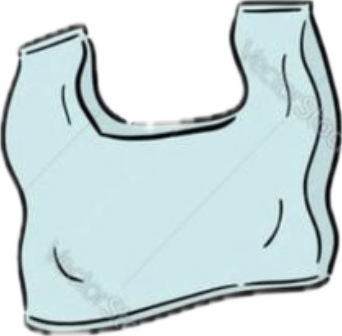
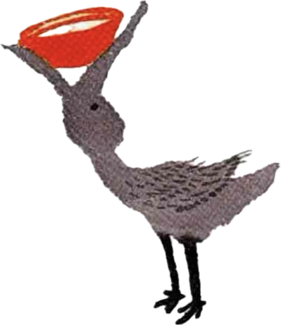

플라스틱섬 청소대작전!
🌳 플라스틱섬을 깨끗하게 만들어요! 🌴
손을 뻗어
쓰레기
를 치워요!

쓰레기를 치울 때마다
+10
점
🌊 쓰레기가 바다에 빠지면
-10
점

바다생물을 건드리면
-1
점
⏰ 40초 안에 쓰레기를 최대한 없애세요!
게임 시작!
⏰ 40
점수: 0
3
⭐⭐⭐
100점
🎉 완벽해요!
쓰레기 10개 / 10개 제거!
섬이 깨끗해졌어요!
🔄 다시 도전하기
📷 카메라 연결 중...